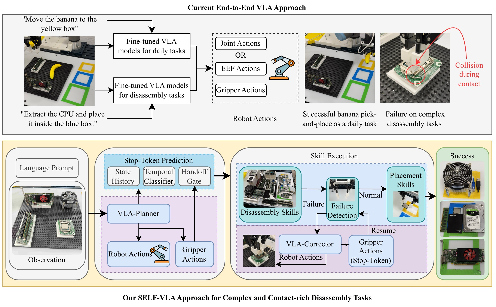

SELF-VLA: A Skill Enhanced Agentic Vision-Language-Action Framework for Contact-Rich Disassembly
Paper under double-blind review
Abstract
Disassembly automation has long been pursued to address the growing demand for efficient and proper recovery of valuable components from end-of-life (EoL) electronic products. Existing approaches have demonstrated promising and regimented performance by decomposing the disassembly process into different subtasks. However, each subtask typically requires extensive data preparation, model training, and system management. Moreover, these approaches are often task- and component-specific, making them poorly suited to handle the variability and uncertainty of EoL products and limiting their generalization capabilities. All these factors restrict the practical deployment of current robotic disassembly systems and leave them highly reliant on human labor. With the recent development of foundation models in robotics, vision-language-action (VLA) models have shown impressive performance on standard robotic manipulation tasks, but their applicability to complex, contact-rich, and long-horizon industrial practices like disassembly, which requires sequential and precise manipulation, remains limited. To address this challenge, we propose SELF-VLA, an agentic framework that combines role-based VLA modules with explicit disassembly skills. SELF-VLA assigns approach and pickup recovery to VLA policies, while programmed skills execute contact-rich disassembly and placement. A stop-token-based handoff mechanism coordinates control transfer between these stages. Across seven component disassembly tasks, SELF-VLA improves full-task success rates by an average of 57.9 percentage points over the corresponding end-to-end policies using OpenVLA-OFT and π0.5.
Method


Real-World Comparison
One row per component. Each row compares end-to-end control with SELF-VLA on both backbones. All videos play at 2× speed, and the counts are full-task successes out of 50 trials.
Recovery with the VLA-Corrector
After a failed grasp check, the VLA-corrector regrasps the component and the skill resumes the placement sequence.
Failure Cases
SELF-VLA does not solve every trial. These clips show representative failures.
Quantitative Results
Full-task success counts over 50 trials per component.